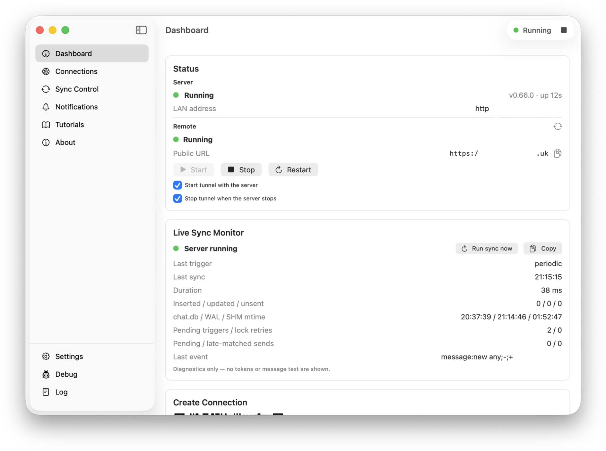
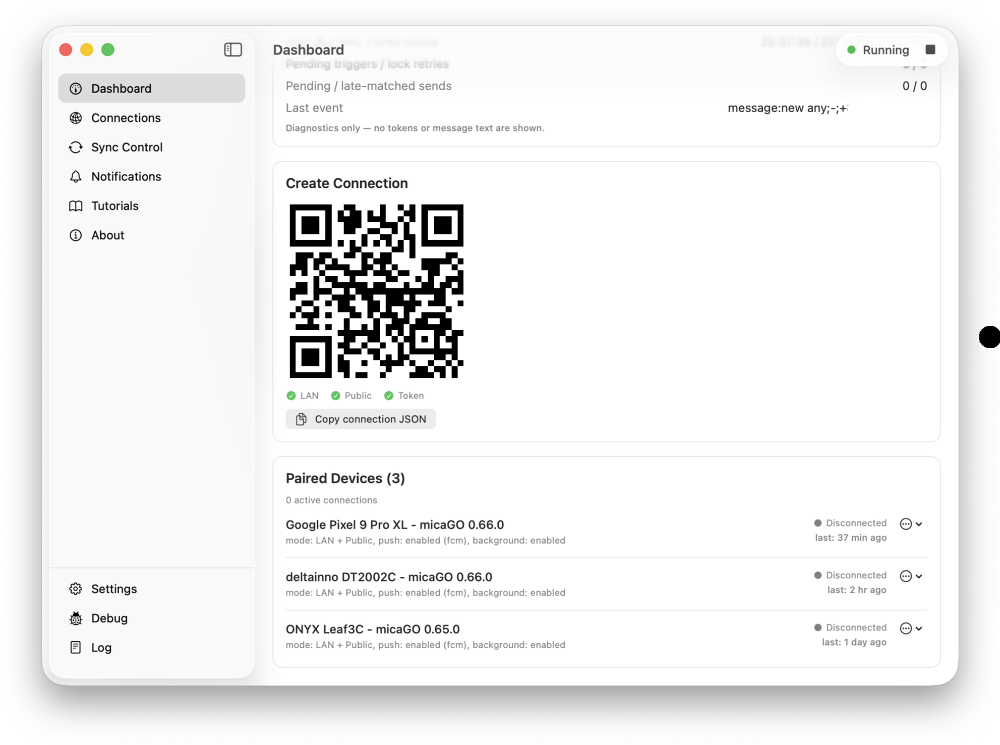
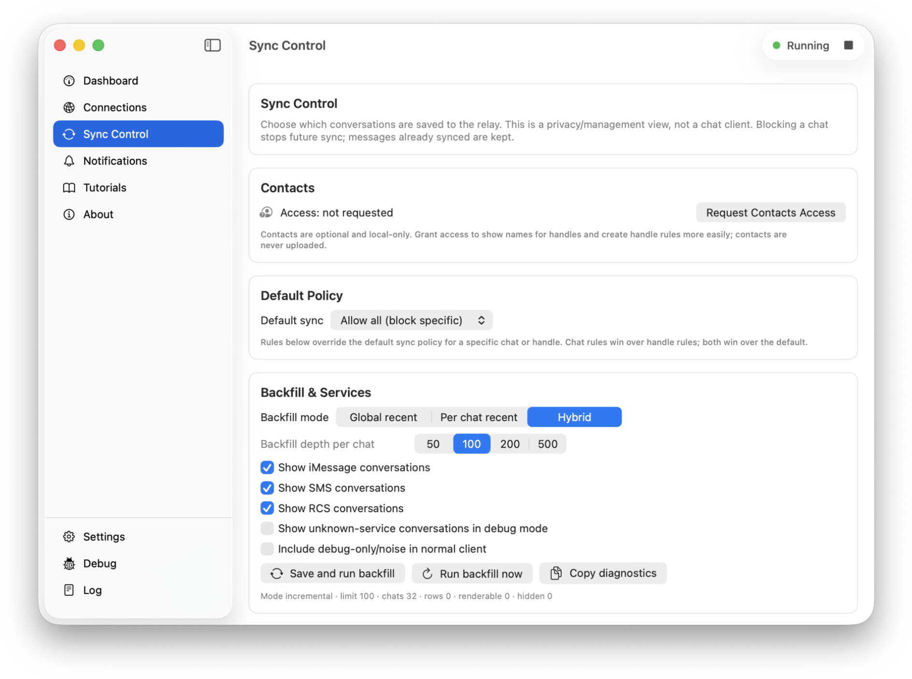

Good fit: you have a Mac
Use a Mac at home or work that can remain awake, connected, and signed in to Messages.
 micaGO
micaGO
Read and send iMessages on Android and Windows through the Messages app on your Mac. Your Mac must remain powered on and connected.

Is this for me?
micaGO requires a Mac signed in to Messages. The Mac handles communication with Apple; Android and Windows connect to that Mac.
Use a Mac at home or work that can remain awake, connected, and signed in to Messages.
You want to answer iMessages from a phone, a tablet, or a PC without walking back to the Mac.
micaGO can't create an iMessage account or reach Apple on its own. Without your own Mac it won't work.
Messages only move while the Mac is awake. When it sleeps, micaGO waits for it to wake up.
What you can do
Messages are sent by your Mac using its configured iMessage account and send route.
Read and reply to your conversations, group chats included.
Share photos and voice messages, and use supported message replies and reactions.
Green-bubble texts work too once your iPhone forwards them to the Mac. Turn on Text Message Forwarding in the iPhone settings.
On the same Wi-Fi it works right away. To use it anywhere else, set up your own secure link to the Mac. Remote access guide.
Interface
You chat in the micaGO app. The Companion app sits in the Mac menu bar and shows whether everything is connected.
The chat list, a conversation, and settings.


The chat list stays open next to the conversation.


It shows the connection status and the code you use to pair a device.



How it works
Install the micaGO Companion on the Mac that is signed in to Messages. When macOS asks, allow Full Disk Access so it can read your messages. Mac setup guide.
Install micaGO on your device. On Android, scan the QR code in the Companion. On Windows, paste the connection JSON or use the optional QR scanner. Use the same local network for initial pairing. Connection guide.
Your conversations appear in the app. Keep your Mac awake and connected to send and receive messages.
Privacy
micaGO requires no hosted account. Chat history is stored on your Mac and cached locally on your clients.
Client connections use HTTPS and device credentials. LAN connections verify the paired certificate; public endpoints use system certificate trust. Remote access requires your own configuration.
Push notifications are optional too. They go through Google's push service with a Firebase project you create yourself. Notifications guide.
Downloads
Every setup needs the Mac Companion. After that, pick the app for the device you chat on.
macOS
Required. It runs on your Mac (macOS 13 or later) and connects your devices to Messages.
Download for Mac
Android
For phones and tablets on Android 7.0 or later.
Download APKFor 64-bit Windows 10 (version 1809) or later. Windows 11 is recommended.
Download for WindowsFAQ
A Mac signed in to Messages is required. It handles iMessage communication for the connected clients.
Yes. Sending and receiving pause while the Mac is asleep or off. Companion offers an optional Keep Awake setting to help maintain availability.
No. Your Mac sends every message from your own Apple ID.
No. It's an independent open source project with no ties to Apple.
micaGO has no hosted chat service. History stays on your devices. Optional Firebase notifications are delivered through your own Firebase project.
Yes, after you set up your own secure link to the Mac. Read the remote access guide.
micaGO is in beta. Compatibility and reliability can vary by macOS version, device, and network configuration.